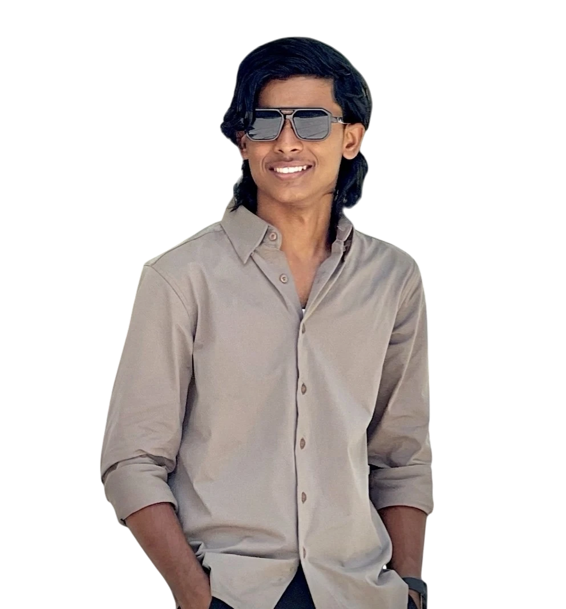

ABOUT ME
Mohammed
Adil KP.
Digital Marketing Specialist in Kerala

THE PERSON BEHIND THE WORK
Creative thinking.
Clear direction.
I’m Mohammed Adil KP, a Digital Marketing Specialist in Kerala. I help businesses grow through digital marketing, creative design, and engaging online experiences.
My work brings together social media, SEO, paid advertising, motion graphics, video editing, and web development.
Explore my services ↗MY JOURNEY
Experience.
Digital Marketing & Meta Ads Specialist
KL Abdul Sathar — Digital Marketing Client Work
Digital Marketing Executive
A GOOD IDEA STARTS WITH A CONVERSATION